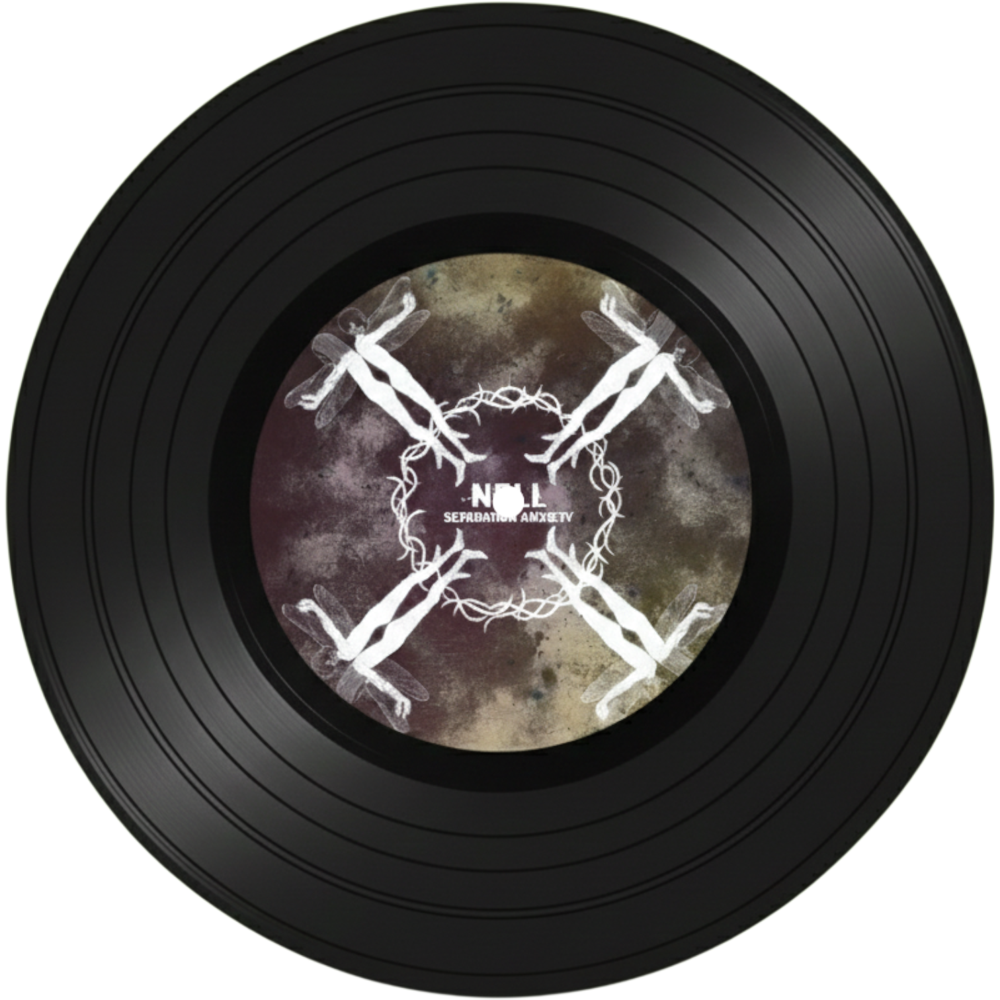
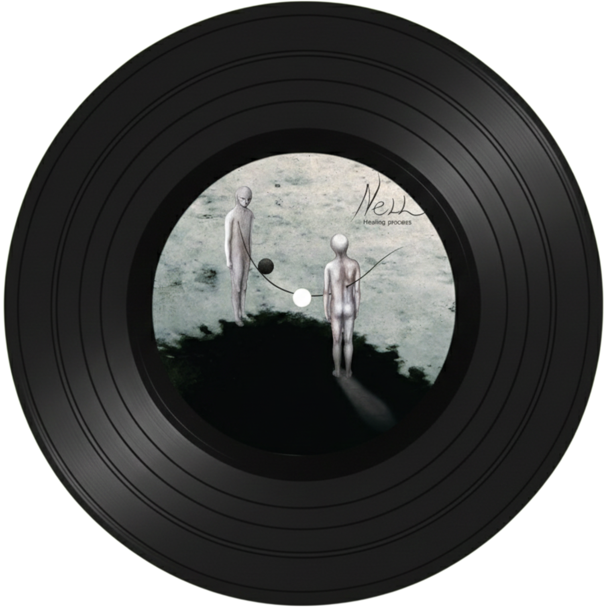
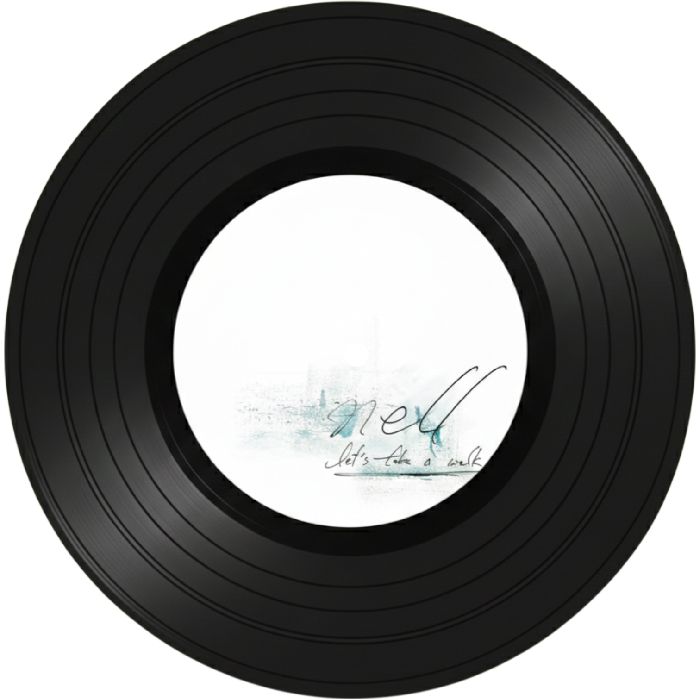
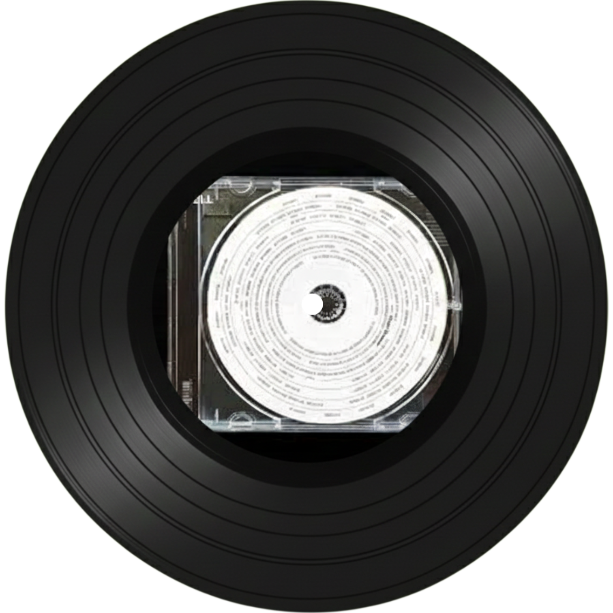

데뷔 때부터 "서태지가 인정한 밴드"라는 수식어가 붙으며 실력을 인정받은 록 밴드 넬은 어떤 앨범에선 가성과 진성을 넘나드는 보컬 스킬로, 어떤 앨범에선 박력 넘치는 밴드 사운드로, 또 사람들에게 공감이 되는 기가 막힌 가사들로 1999년 데뷔 이후로 많은 이들에게 아직까지도 사랑받고 있는 밴드이다.

기억을 걷는 시간
넬 하면 가장 먼저 떠오르고 가장 대중적인 넬의 노래이다. "아직도"라는 세 글자의 담담한 읊조림으로도 시작하는 것으로도 매우 유명하며, 사랑하는 사람과 이별한 상황에서 느낄 수 있는 쓸쓸함과 그리움을 나타낸 가사 내용과 함께 그런 가사를 돋보이게 하는 간단한 멜로디 진행, 그리고 서서히 감정이 고조되다가 고난도의 보컬 스킬을 필요로 하는 가성과 진성을 넘나드는 뒷부분 마무리로 곡이 마무리된다.

한계
이 곡을 추천한 이유의 많은 비중을 차지하는 부분은 가사에 있다. '나는 이게 최선인데 내가 나인 것이 내 잘못은 아니지 않냐'는 식의 가사로 시작하여, '난 이렇게 나약한 한 사람일 뿐인데 대체 내게서 뭘 더 바라느냐'는 내용의 가사로 이어진다. 이 곡을 들어본 사람들의 반응은 '직장 상사에게 들려주고 싶다', '인간 관계에서 지칠 때 꼭 필요한 노래다' 등의 평을 남기곤 한다.

믿어선 안될 말
처음엔 "널 사랑해", "널 언제나 기억해"등의 연인들 사이에 할 수 있는 달콤한 말들로 시작하지만, 제목에서도 느낄 수 있다시피 이런 말들을 '믿어선 안될 말'들이라고 표현하고 있다. 사랑하는 사이가 무너지면서 느낄 수 있는 절망과 분노를 멜로디와 보컬의 그로울링에 담아내 극적으로 표현하고 있다. 라이브에서 느낄 수 있다시피 조명으로 인해 배경이 빨간색으로 바뀌면서 더욱 몰입할 수 있는, 묵직한 록 밴드의 느낌을 받을 수 있는 곡이다.

Moon Shower
1999년부터 활동하고 있는 넬로서는 2023년 10월에 발표한 상당히 최신 곡에 해당하는 곡으로, '넬이 이런 멜로디도 소화할 수 있구나'를 느낄 수 있는 박력 넘치는 멜로디와 거친 가사를 가진 노래이다. 3분 23초로 짧은 길이의 노래이지만 넬의 파격적인 변신을 보고 싶다면 한 번쯤 들어볼 만한 노래이다.